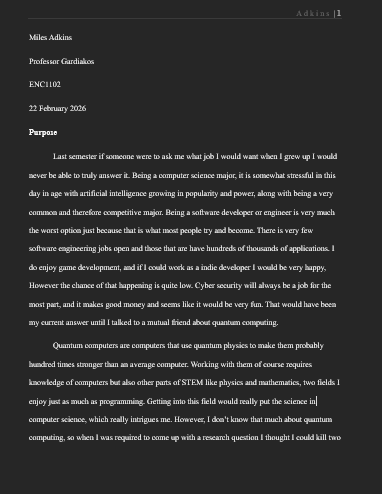

Generating Inquiry is one of the more complex SLO at least in my opionion, I
generally have to read it a couple times to try and understand what it means.
Inquiry as Merriam-Webster puts it means "a request for information", so as a
result this SLO means that students will be able to create writings that ask
for information, to ask a question.
With that information I felt that my second major assignment
that was my research proposal was a good
representaion of this SLO, This was the first paper where I put into writing about
what I would want to research in the final project Situated Inquiry Research Paper
that you can find under Research Genre Production.
Specificaly this article was where I talked about what rhetoric question I would work on
for the next ~4 weeks. This was also where I talked about why this question was so important
Not only to me as the writer but for other researchers in this field. This same paper
is also later used as my Annotated Bibliography later in this article which you can find
on Contributing Knowladge.
My question was What rhetorical strategies are effective in explaining a complex concept like quantum computing?
When I of course explain this in the article but I chose this for a couple reasons
one, because I was genuinly interested in quantum computing and wanted to have an excuse to
learn more about it, but also because I quite often have quite complex stuff I like to
talk about beyond quantum computing so being able to explain that is always a plus.
